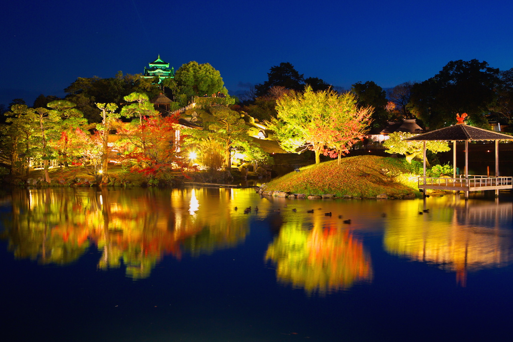
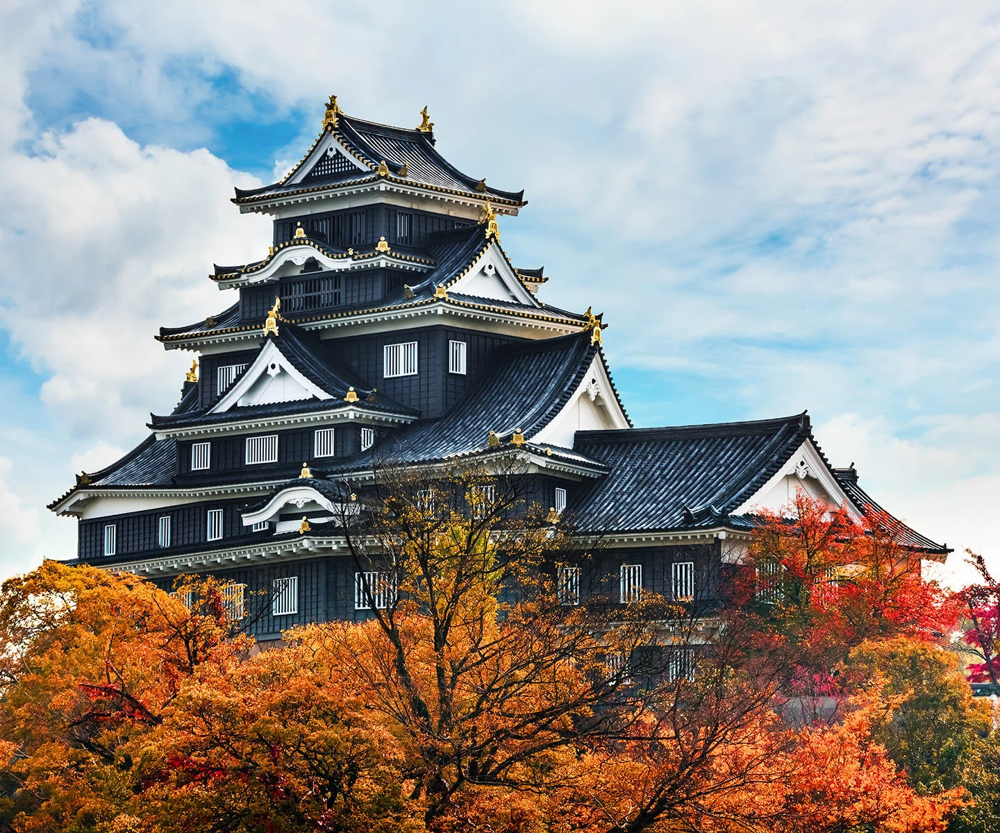
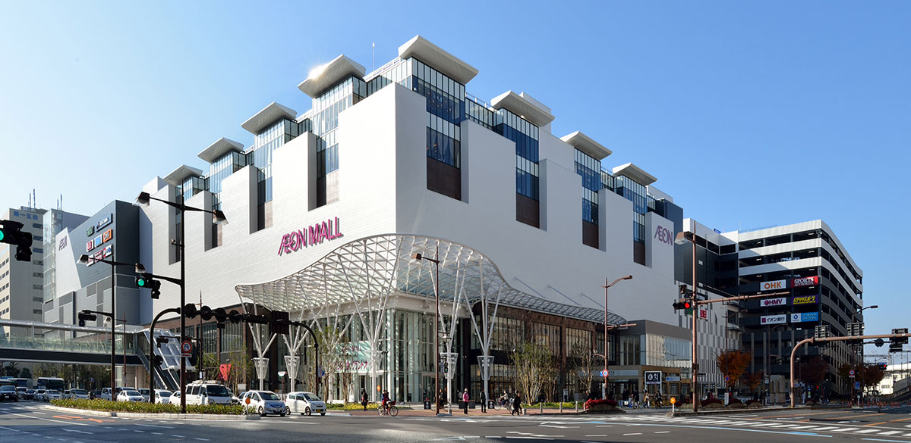
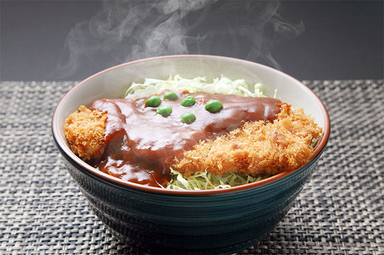
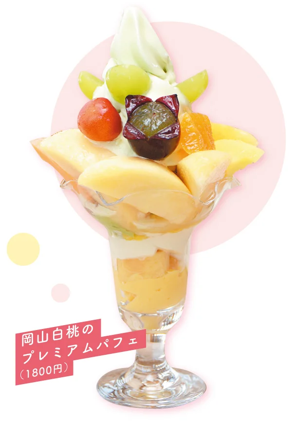

岡山市には歴史ある観光スポットや、おいしいご当地グルメがたくさんあります。 ここでは、おすすめの観光地とグルメを紹介します。

日本三名園の一つで、江戸時代に造られた美しい庭園です。 季節ごとに異なる景色を楽しむことができ、岡山市を代表する観光スポットです。

黒い外観が特徴で「烏城」とも呼ばれています。 後楽園のすぐ近くにあり、岡山の歴史を感じられる人気スポットです。

岡山駅から徒歩約五分の大型ショッピングモールです。 ファッションや雑貨、グルメなど多くの店があり、観光の休憩やお土産探しにもおすすめです。

サクサクのとんかつにデミグラスソースをかけた岡山を代表するご当地グルメです。 濃厚なソースとカツの相性がよく、多くの飲食店で味わうことができます。

岡山県産の白桃をたっぷり使用した人気スイーツです。 みずみずしく甘い白桃を味わえる、岡山ならではのデザートです。
岡山市には歴史ある観光スポットや、おいしいご当地グルメが数多くあります。 後楽園や岡山城で歴史や自然を楽しみ、デミカツ丼や白桃パフェなどの名物を味わえば、岡山の魅力を存分に感じることができると思います。